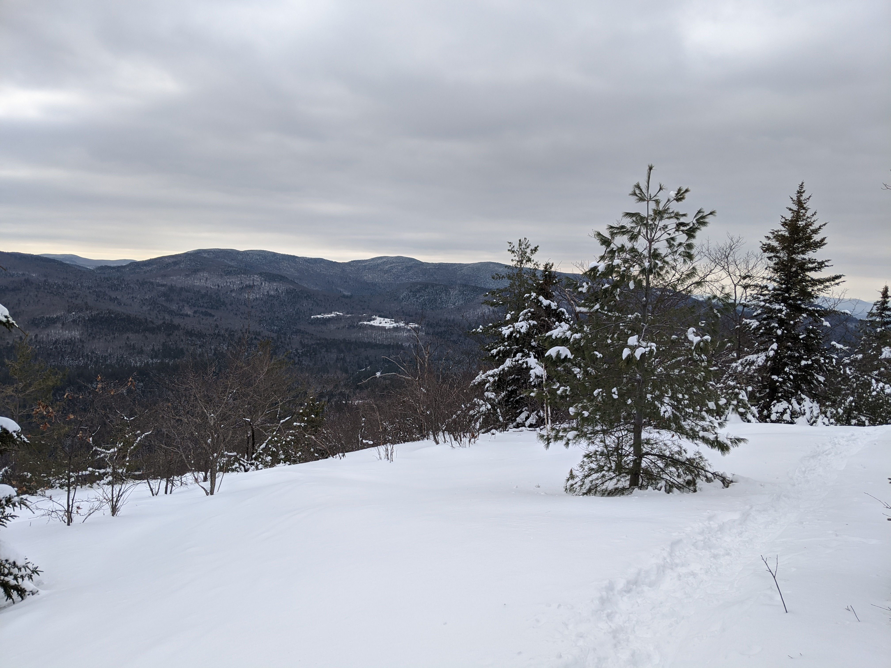

Distance
Distance Elevation
Elevation Observed Wildlife
Observed WildlifeThis was my first ever real winter hike and I thoroughly enjoyed it. I took the counter-clockwise route. The climb started right from the beginning and got a steeper as I approached the peaks. The views were great, especially since the peaks are lower compared to others in the Whites. Although I didn't capture it in the pictures (my camera died from the cold), the walk between the peaks was gorgeous boreal forest. I was lucky to have done the hike after a couple fresch inches of powder to add that added level of winter mystique. I've heard this trail can get very crowded in summer months so get there early if you plan to do it.


